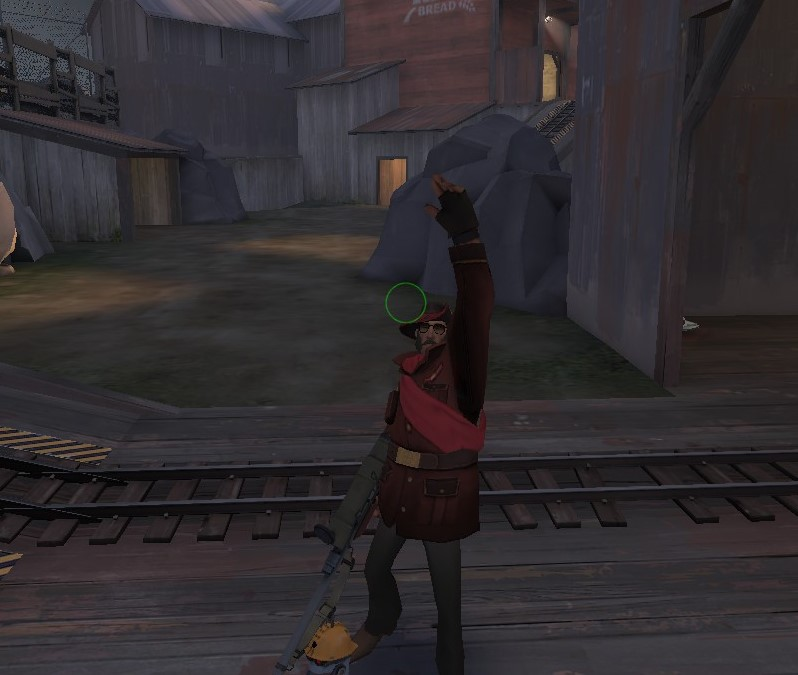

Content section
This website was made in HTML as a project for a coding class. Futher content was supposed be added, including a downloadable 2D platformer.My Schedule
- O'Connell's Advanced Java Coding Class (Mr O'Connell)

Sniper on Thunder Mountain,-Team Fortress 2My Intrests
- TF2
- L4D2
- Japan
- (Formerly) Evan Shoultz (Evan Shoultz has asked that I remove mention of him from this section, I will not)